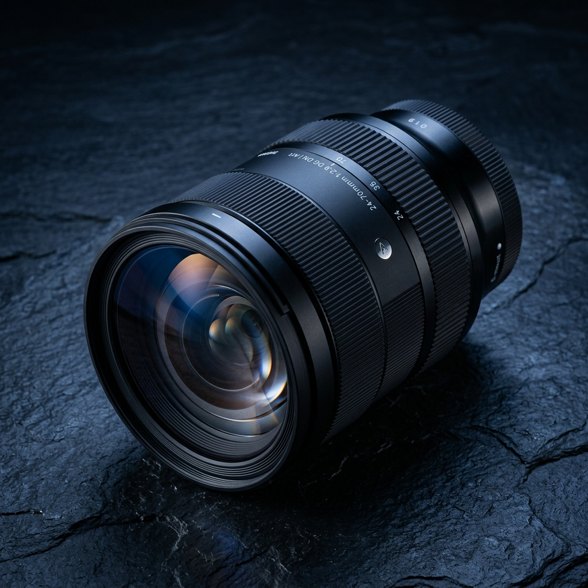
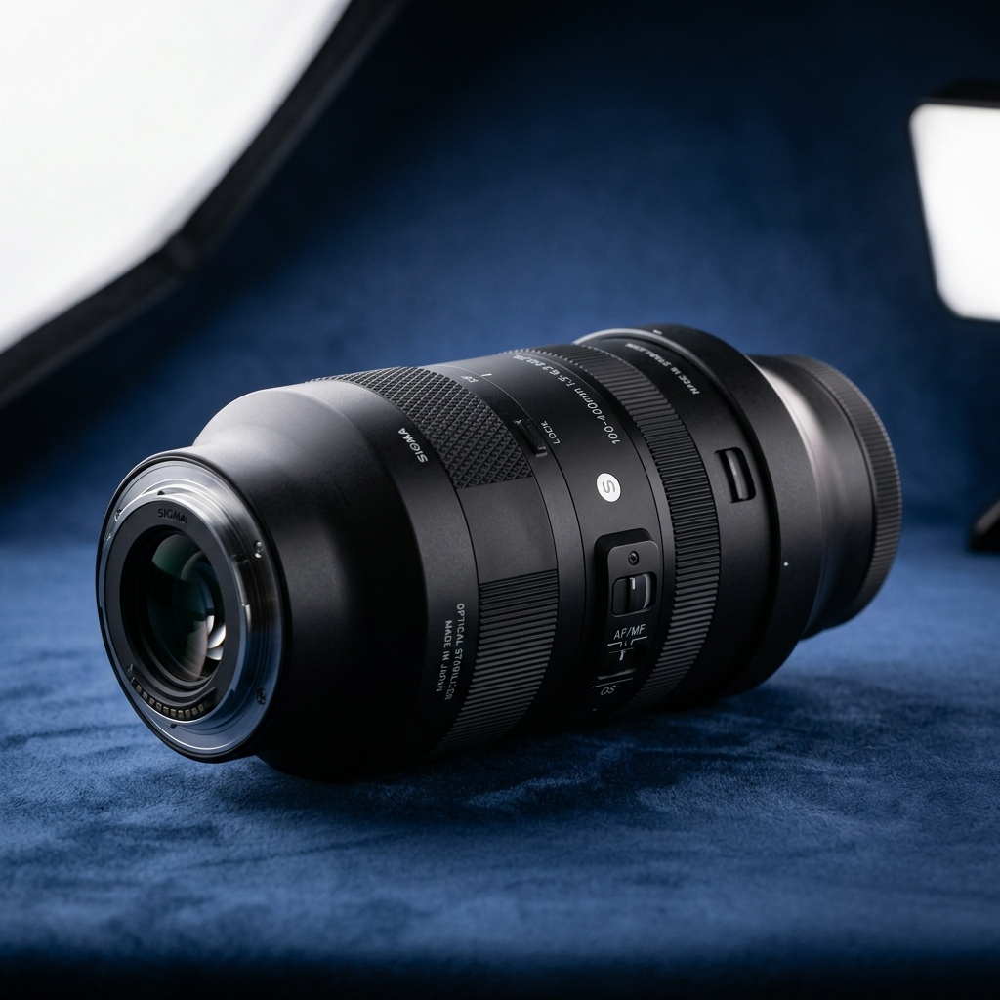
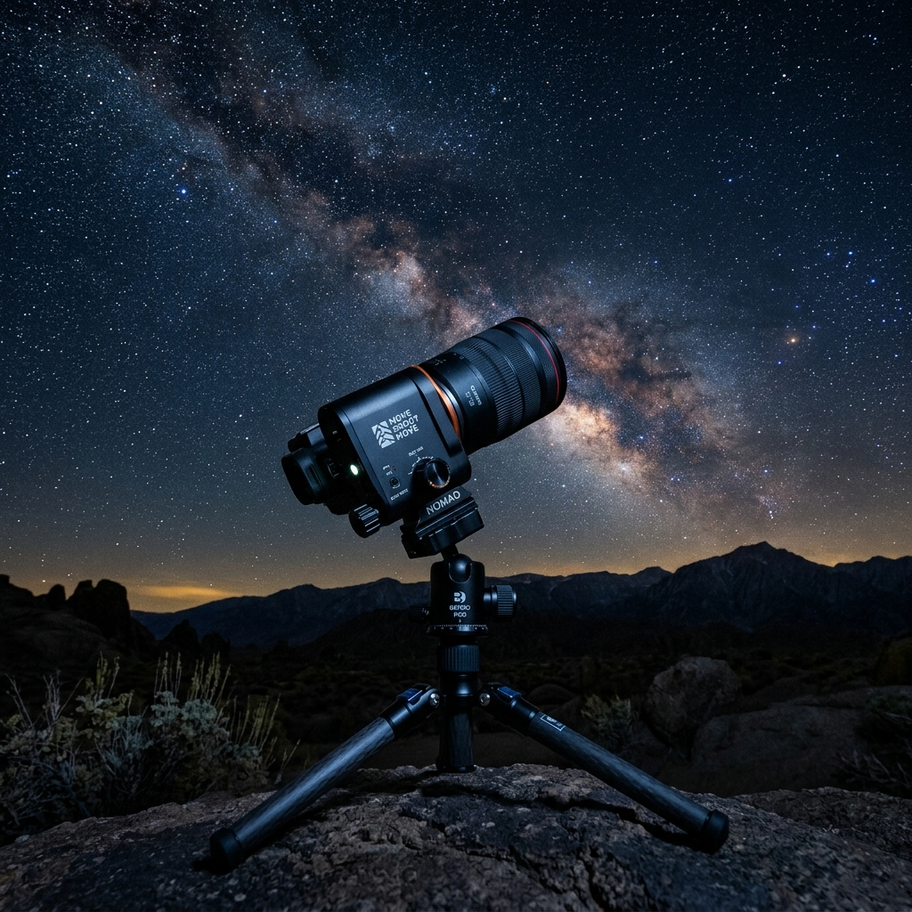
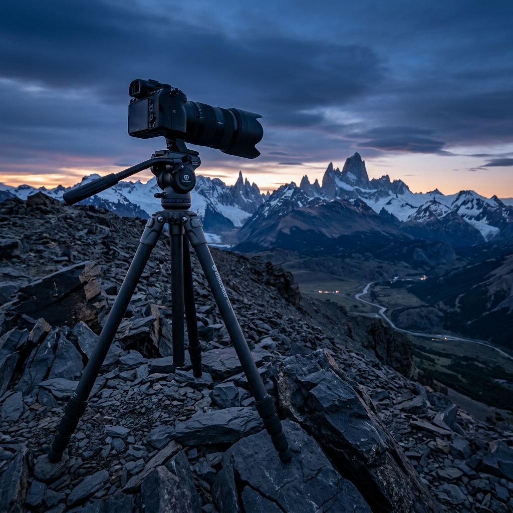
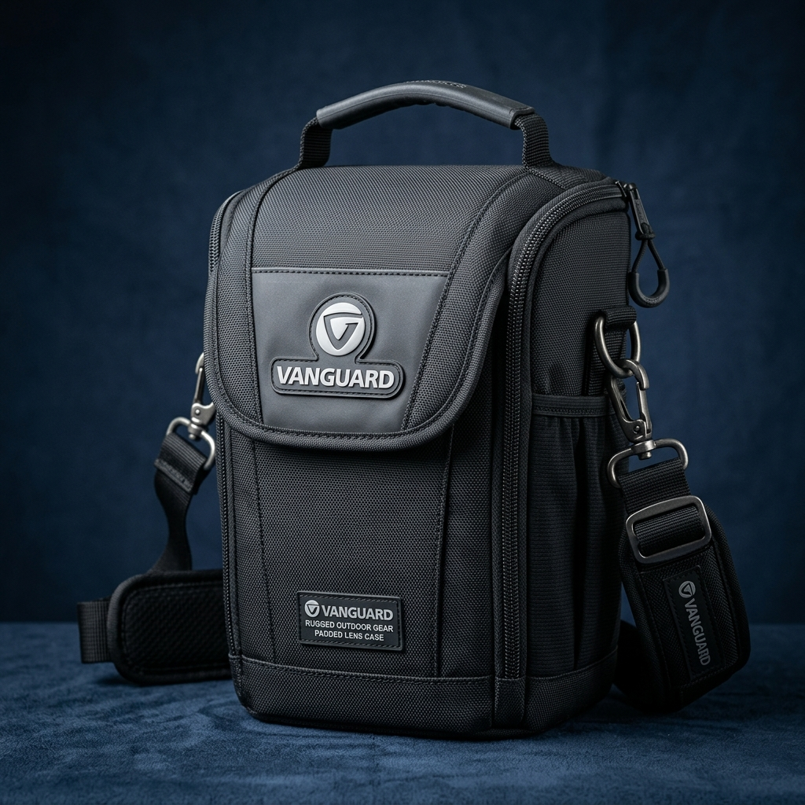
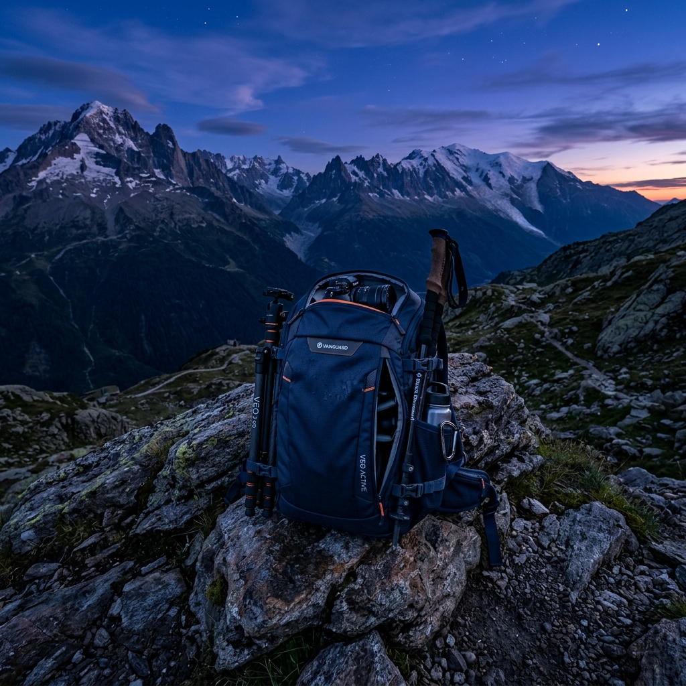

Ogni componente del mio kit è stato testato nelle condizioni più estreme: dalle notti gelide in quota ai trekking costieri. In questa pagina trovi le schede tecniche, le mie recensioni sintetiche e i link/codici sconto ufficiali per i brand con cui collaboro.
 SIGMA Ambassador
SIGMA Ambassador
L'obiettivo definitivo per l'astrofotografia ambientata. La sua eccezionale luminosità f/1.4 combinata con un controllo impeccabile del coma e delle aberrazioni cromatiche ai bordi dell'immagine permette di catturare il nucleo della Via Lattea con tempi di scatto ridotti e ISO bassi. È il punto di riferimento in tutti i miei workshop notturni.

SIGMA AmbassadorLo zoom di lavoro quotidiano per eccellenza. Estremamente nitido da bordo a bordo a qualsiasi focale, è la lente ideale per la fotografia di paesaggio diurno, ritratti ambientati e scatti durante i trekking in montagna dove occorre rapidità di composizione e versatilità senza cambiare ottica.

SIGMA AmbassadorIl teleobiettivo leggero per isolare dettagli di creste montuose, giochi di luce sulle nubi e strati di paesaggio compresso. Offre un'incisione ottica straordinaria in un corpo compatto che non pesa nello zaino durante le lunghe salite in quota.

Codice Sconto & AffiliatoIl tracciatore stellare ultra-compatto per chi ama viaggiare leggero senza rinunciare alla qualità. Compensando la rotazione terrestre, permette di effettuare lunghe esposizioni del cielo notturno mantenendo le stelle perfettamente puntiformi e il rumore digitale al minimo.

Vanguard AmbassadorTreppiede in fibra di carbonio ad alte prestazioni con mezza sfera di livellamento integrata. Garantisce una stabilità incrollabile per l'astrofotografia in presenza di vento forte e un livellamento istantaneo su pendenze montuose o scogliere impervie.

Vanguard AmbassadorCustodia protettiva imbottita e tropicalizzata per l'alloggiamento e il trasporto in sicurezza di ottiche pregiate, filtri a lastra e accessori delicati. Perfetta da agganciare all'esterno o all'interno dello zaino durante i trekking.
 Vanguard Ambassador
Vanguard Ambassador
Lo zaino fotografico da spedizione da 53 litri. Progettato per contenere tutto il corredo fotografico (2 corpi, 4 obiettivi, tracciatore stellare) insieme all'attrezzatura per il bivacco in quota (tenda, sacco a pelo, vestiario tecnico). Schienale ergonomico ad altissimo comfort.

Vanguard AmbassadorLa versione agile e dinamica da 46 litri, ottima per uscite giornaliere e trekking veloci. Mantiene gli stessi standard costruttivi ed ergonomici del 53KG in un volume più compatto, ideale per chi viaggia in aereo o su percorsi ripidi.